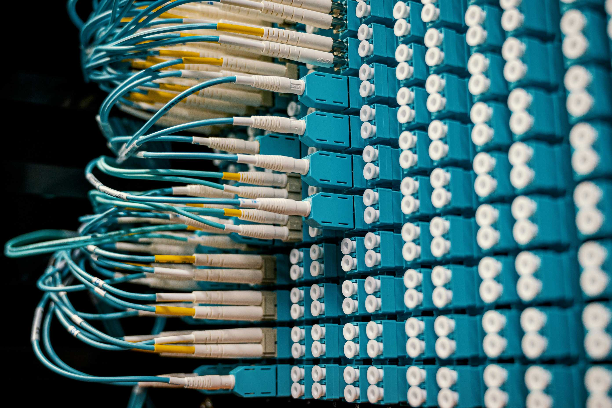

Datacenter bij Cocaloria
In dit project stond ik in voor de volledige installatie en configuratie van een nieuw datacenter. Dit omvatte de installatie van server racks, netwerkapparatuur, en een redundante koelingsinfrastructuur om een betrouwbare en efficiënte werking te waarborgen. De focus lag op hoge beschikbaarheid, veiligheid, en schaalbaarheid om aan de toekomstgerichte behoeften van de organisatie te voldoen. Dankzij grondige planning en nauwe samenwerking met verschillende teams is dit datacenter uitgegroeid tot een robuuste basis voor kritieke bedrijfsapplicaties.